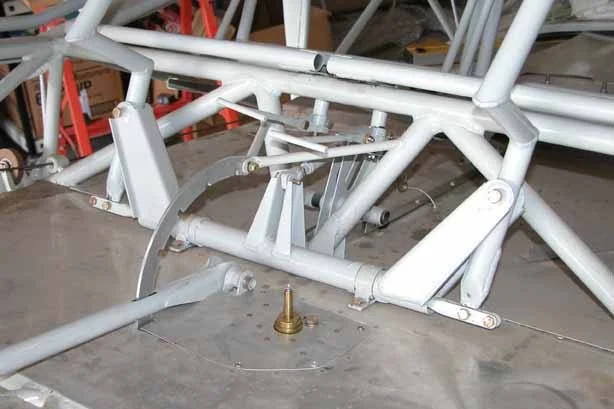

View photo ↗MODEL UNKNOWNLEGACY
Uncredited factory-manual example
Control assembly in the cabin
An oblique cabin view connects the stick sockets, torque tube and pushrod to the surrounding seat and floor structure.
Controls / Control Sticks
Bearhawk / AviPro · Legacy Fuselage Manual · PDF p17
View original source ↗
Model unknown · Companion applicability unverified.